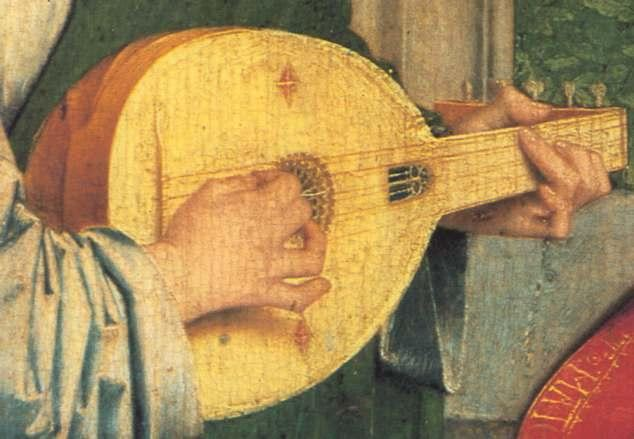

Part-2, Hudan lil Nas [Guidance for Mankind] Chapter 23 [Al-Muminun / The Believers]
পার্ট-২, হুদান লিল নাস [মানবজাতির জন্য নির্দেশনা] অধ্যায় 23 [আল-মুমিনুন/বিশ্বাসীদের]
Highlight: Call of Truth through the ages
হাইলাইট: যুগে যুগে সত্যের আহ্বান
The Surah describes the purpose and cycle of human life. Many Prophets were rejected from the time of Noah. The Truth was recognized only by the people of Israel and a small number of Christians. Finally, it was the time of the last Prophet (pbuh), whom the people were to accept.
সূরায় মানব জীবনের উদ্দেশ্য ও চক্র বর্ণনা করা হয়েছে। নূহের সময় থেকে অনেক নবী প্রত্যাখ্যাত হয়েছেন। সত্য শুধুমাত্র ইস্রায়েলের জনগণ এবং অল্প সংখ্যক খ্রিস্টান দ্বারা স্বীকৃত হয়েছিল। অবশেষে, এটি শেষ নবী (সাঃ) এর সময় ছিল, যাকে মানুষ গ্রহণ করেছিল।
Segment 1: Purpose and Cycle of Human Life
সেগমেন্ট 1: মানব জীবনের উদ্দেশ্য এবং চক্র
Segment 2: People that Failed
সেগমেন্ট 2: যারা ব্যর্থ হয়েছে
Segment 3: Three Major Prophets
সেগমেন্ট 3: তিনজন প্রধান নবী
Segment 4: The Call
সেগমেন্ট 4: কল
Tafsir of the Surah Segment 1 Purpose and Cycle of Human Life
সূরা সেগমেন্ট 1 এর তাফসির মানব জীবনের উদ্দেশ্য ও চক্র
The believers must win through—those who humble themselves in their prayers, who avoid vain talk, who are active in deeds of charity, who abstain from sex except with those joined to them in the marriage bond or whom their right hands possess, for they are free from blame, but those whose desires exceed those limits are transgressors; those who faithfully observe their trusts and their covenants, and who guard their prayers. These will be the heirs who will inherit Firdaus (a level of Jannaat); they will dwell therein.
মুমিনদের অবশ্যই বিজয়ী হতে হবে - যারা তাদের প্রার্থনায় বিনয়ী হয়, যারা অনর্থক কথা এড়িয়ে চলে, যারা দাতব্য কাজে সক্রিয়, যারা বিবাহ বন্ধনে যুক্ত বা তাদের ডান হাতের অধিকারী ব্যক্তিদের ছাড়া যৌনতা থেকে বিরত থাকে, কারণ তারা দোষমুক্ত, কিন্তু যাদের ইচ্ছা এই সীমা অতিক্রম করে তারা সীমালংঘনকারী; যারা বিশ্বস্ততার সাথে তাদের আমানত ও চুক্তি পালন করে এবং যারা তাদের নামাজের হেফাজত করে। এরাই হবে উত্তরাধিকারী যারা ফিরদাউসের (জান্নাতের একটি স্তর) উত্তরাধিকারী হবে; তারা সেখানে বাস করবে।
And indeed, We created man out of the 'heredity (sulalatin) of lute (tinin)'. Remarks:
আর প্রকৃতপক্ষে, আমি মানুষকে সৃষ্টি করেছি 'লুট (তিনিনের) বংশগতি (সুলাতিন) থেকে। মন্তব্য:
'Tinin' is usually translated as 'clay,' but one of its meanings is 'lute' in the dictionary. 'Lute' seems more appropriate in the context of the verses. I have translated the verse above word-for-word. A human is created from a sperm and an ovum, each carrying 23 haploid chromosomes. Each haploid chromosome contains a double-helix DNA molecule. These DNA molecules carry the code for hereditary traits (Sulalatin) from both the father and mother.
'টিনিন' সাধারণত 'কাদামাটি' হিসাবে অনুবাদ করা হয়, তবে অভিধানে এর একটি অর্থ হল 'লুট'। আয়াতের প্রেক্ষাপটে 'লুট' বেশি উপযুক্ত বলে মনে হয়। আমি উপরের শ্লোকটি শব্দার্থে অনুবাদ করেছি। একজন মানুষ একটি শুক্রাণু এবং একটি ডিম্বাণু থেকে সৃষ্টি হয়েছে, প্রতিটিতে 23টি হ্যাপ্লয়েড ক্রোমোজোম রয়েছে। প্রতিটি হ্যাপ্লয়েড ক্রোমোজোমে একটি ডাবল-হেলিক্স ডিএনএ অণু থাকে। এই ডিএনএ অণুগুলি পিতা এবং মা উভয়ের কাছ থেকে বংশগত বৈশিষ্ট্যের (সুলালাটিন) কোড বহন করে।
FIGURE 23.1: Lute (Tinin)

চিত্র 23_1 / Figure 23_1
চিত্র 23.1: লুট (টিনিন)
চিত্র 23_1 / Figure 23_1
The sperm and ovum fuse to form a zygote containing 46 DNA molecules. Each DNA molecule is like a six- foot-long string, making the human zygote resemble a lute (tinin) with 46 strings. These strings work harmoniously to produce the 'music' of genome expression, shaping the human body. In this verse, the zygote is compared to a lute, and its 'music' to genome expression, allowing people of earlier times—who were unaware of concepts like the zygote, DNA, and genome expression—to understand the harmony of human development. A baby is created from the 'heredity of lute' (sulalatin min tinin), which carries the hereditary traits from both the father and mother—resulting in a resemblance to the father, but not exactly like the father. A single double helix DNA molecule contains many genes. Genes are short segments of DNA that carry specific genetic information to produce proteins and pass hereditary traits from parent to child. The functions of about 23,000 genes have been identified; however, they account for less than 2% of the DNA. A particular 'body plan' gene, called the Hox gene, is at the top of the chain of command. It gives orders that cascade through the developing embryo, activating entire networks of switches and genes that form the body-parts. Hox genes are critical to the shape and form of a developing organism. But, the genome alone cannot produce a human. A zygote kept in a test tube under the most favorable conditions will only multiply to create a lump of flesh. Likewise, there is nothing inherently special in the mother‘s womb. In reality, Allah forms a baby by guiding the genetic code—He plays the 'lute' (Tinin):
শুক্রাণু এবং ডিম্বাণু একত্রিত হয়ে 46টি ডিএনএ অণু সমন্বিত জাইগোট গঠন করে। প্রতিটি ডিএনএ অণু একটি ছয়-ফুট লম্বা স্ট্রিংয়ের মতো, যা মানব জাইগোটকে 46টি স্ট্রিং সহ একটি ল্যুট (টিনিন) এর মতো করে তোলে। এই স্ট্রিংগুলি জিনোম এক্সপ্রেশনের 'সংগীত' তৈরি করতে সুরেলাভাবে কাজ করে, মানবদেহকে আকৃতি দেয়। এই শ্লোকটিতে, জাইগোটকে একটি ল্যুটের সাথে তুলনা করা হয়েছে, এবং এর 'সংগীত' জিনোম অভিব্যক্তির সাথে, যা পূর্ববর্তী সময়ের লোকেদের - যারা জাইগোট, ডিএনএ এবং জিনোম অভিব্যক্তির মত ধারণাগুলি সম্পর্কে অবগত ছিল না - মানব উন্নয়নের সামঞ্জস্য বুঝতে দেয়। একটি শিশুর জন্ম হয় 'Lute এর বংশগতি' (সুলালাটিন মিন টিনিন) থেকে, যা পিতা ও মাতা উভয়ের বংশগত বৈশিষ্ট্য বহন করে- যার ফলে পিতার সাথে সাদৃশ্য থাকে, কিন্তু ঠিক পিতার মতো নয়। একটি একক ডাবল হেলিক্স ডিএনএ অণুতে অনেকগুলি জিন থাকে। জিন হল ডিএনএ-এর ছোট অংশ যা প্রোটিন তৈরির জন্য নির্দিষ্ট জেনেটিক তথ্য বহন করে এবং পিতামাতা থেকে সন্তানের মধ্যে বংশগত বৈশিষ্ট্যগুলি প্রেরণ করে। প্রায় 23,000 জিনের কাজ চিহ্নিত করা হয়েছে; যাইহোক, তারা DNA এর 2% এর কম। একটি নির্দিষ্ট 'বডি প্ল্যান' জিন, যাকে বলা হয় হক্স জিন, চেইন অফ কমান্ডের শীর্ষে রয়েছে। এটি আদেশ দেয় যে বিকাশমান ভ্রূণের মধ্য দিয়ে ক্যাসকেড করে, শরীরের অঙ্গ-প্রত্যঙ্গ গঠনকারী সুইচ এবং জিনের পুরো নেটওয়ার্ক সক্রিয় করে। হক্স জিনগুলি একটি উন্নয়নশীল জীবের আকার এবং ফর্মের জন্য গুরুত্বপূর্ণ। কিন্তু, জিনোম একা মানুষ তৈরি করতে পারে না। সবচেয়ে অনুকূল অবস্থার অধীনে একটি পরীক্ষা টিউবে রাখা একটি জাইগোট শুধুমাত্র মাংসের একটি পিণ্ড তৈরি করতে সংখ্যাবৃদ্ধি করবে। একইভাবে, মাতৃগর্ভে সহজাতভাবে বিশেষ কিছু নেই। বাস্তবে, আল্লাহ জেনেটিক কোডের নির্দেশনা দিয়ে একটি শিশু গঠন করেন-তিনি 'বাজান' (তিনিন):
―…Dost thou deny Him Who created thee from zygote (turabin), then from a blastocyst (nutfatin / droplet), then fashioned thee into a man?‖ Al Quran 18:37 Allah does not work in the test tube, but in the mother‘s womb, because He has created a woman‘s body with better fasciitis for Him to work, and a mother should take care of a child. Who else possesses the knowledge to play the lute? Most ungrateful are those who attribute partners to Allah.
-- তুমি কি তাকে অস্বীকার করছ যিনি তোমাকে জাইগোট (তুরাবিন) থেকে সৃষ্টি করেছেন, তারপর ব্লাস্টোসিস্ট (নাটফ্যাটিন/ফোঁটা) থেকে, তারপর তোমাকে একজন পুরুষে রূপ দিয়েছেন? - আল কুরআন 18:37 আল্লাহ টেস্টটিউবে কাজ করেন না, কিন্তু মাতৃগর্ভে কাজ করেন, কারণ তিনি একটি মহিলার শরীর তৈরি করেছেন তার জন্য একটি ভাল ফ্যাসিটাইটিস এবং সন্তানের যত্ন নেওয়া উচিত। ল্যুট বাজাবার জ্ঞান আর কার আছে? সবচেয়ে অকৃতজ্ঞ তারা যারা আল্লাহর সাথে শরীক সাব্যস্ত করে।
Then, We made him as a nutfatan (droplet) in a place of rest, firmly fixed.
অতঃপর, আমি তাকে একটি বিশ্রামের জায়গায় নতফাতান (ফোঁটা) হিসাবে দৃঢ়ভাবে স্থাপন করেছি।
The zygote spends the next few days traveling down the fallopian tube, continuing to divide and forming an inner group of cells and a single-layer outer shell called the trophoblast. At this stage, it is known as a blastocyst.
জাইগোট পরের কয়েক দিন ফ্যালোপিয়ান টিউবের নিচে ভ্রমণ করে, কোষের একটি অভ্যন্তরীণ গোষ্ঠী এবং একটি একক-স্তর বহিরাগত শেল যাকে ট্রফোব্লাস্ট বলে বিভক্ত এবং গঠন করে। এই পর্যায়ে, এটি একটি ব্লাস্টোসিস্ট হিসাবে পরিচিত।